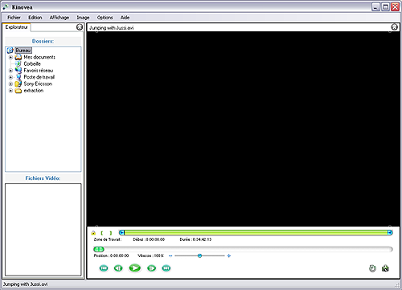
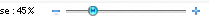

Visualiser un Geste Sportif
Ce pas-à-pas vous guide dans les opérations suivantes :
Ouvrir et lire une vidéo, Sélectionner une Zone de Travail, Agrandir l'image, Ralentir la lecture.
1. Ouvrir et Lire une vidéo.
A l'aide du menu : Fichier > Ouvrir, choisissez le fichier vidéo de la
compétition ou de la séance d'entraînement.
La vidéo se charge dans un écran de Lecture/Analyse.

Lancez la lecture à l'aide du bouton : 
2. Sélectionner une Zone de Travail.
Le curseur de navigation vous permet de sauter d'un point à un autre de la vidéo :
Nous allons spécifier une zone réduite de la vidéo pour nous concentrer sur une séquence particulière.
Déplacez vous jusqu'à la période intéressante, puis utilisez le bouton début de zone de travail : 
Lancez la lecture et laissez défiler jusqu'à la fin de la période à étudier. Appuyez alors sur le bouton de fin de zone : 
Le curseur de navigation est désormais plus précis, car restreint à la Zone de Travail.
Si le mode de lecture en boucle est activé, la lecture se fera entre le début et la fin de la Zone de Travail.
3. Agrandir l'image.
Si
l'image parait trop petite, utilisez les poignées carrées situées aux
coins de l'image. Faites les glisser jusqu'à obtenir la taille voulue.
4. Ralentir la lecture.
Afin de mieux étudier le geste, diminuez la vitesse de lecture à l'aide du curseur de vitesse.
